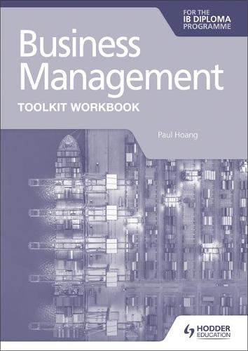
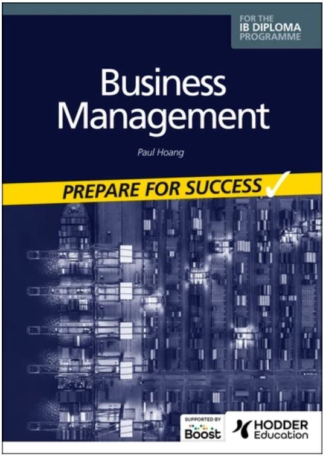
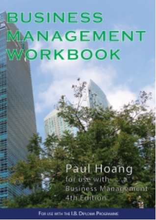
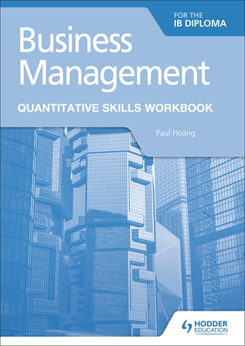
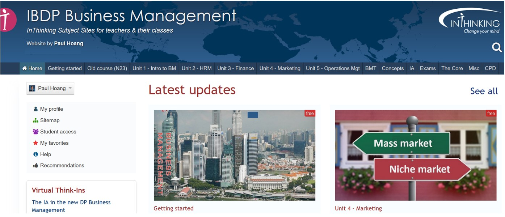
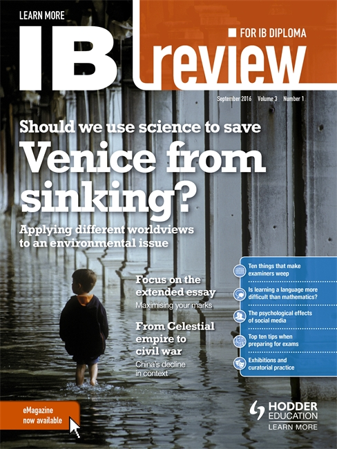
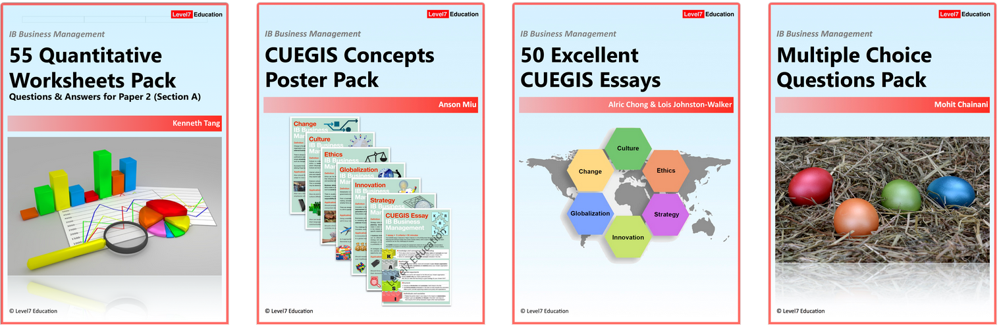
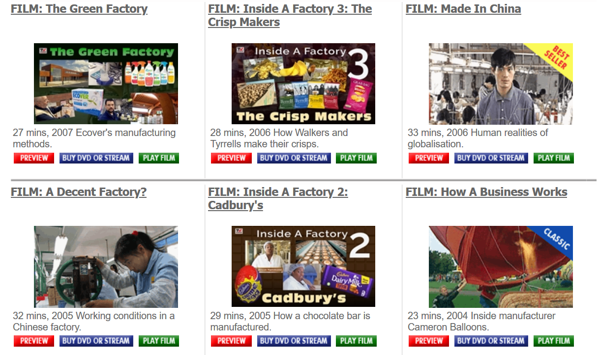
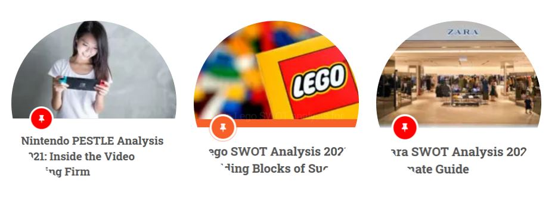

IB Docs (2) Team
IB Docs (2) Team

Resources for IB DP Business Management
Textbook and Workbook for the new syllabus (first teaching July/Aug 2022, first exams May 2024)
Business Management for the IB Diploma, 5th edn, IBID Press ISBN: 9781921917820 | IB Business Management Toolkit Workbook, Hodder Education ISBN: 9781398358409 |
 | |
The best-selling and most comprehensive textbook (at 762 pages) that is available for the IB Business Management course, with over 110,500 copies sold worldwide, now in its 5th edition and rewritten to cover all aspects of the new course. There is an accompanying answer book, with full mark schemes for all 230 exam-style questions in the textbook. A fully revised PowerPoint Pack is also available. This is the new 5th edition of the best-selling textbook for the IB DP course, published by IBID Press. For those interested in using the 5th edition as their main textbook, please contact Jodie Henry from IBID Press (the publisher) directly: jodie@ibid.com.au Details can be found here, where you can also download a complimentary chapter featuring one of the tools in the new "Business Management Toolkit" in the 5th edition textbook. There is also an e-book version available via the Box of Books platform. At the time of writing, IBID Press has dispatched more than 16,870 copies of the 5th edn textbook to teachers and students across the world. Testimonials for 5th edition "Just received the 5th Edition e-book version - looks absolutely awesome! This will be invaluable for students.” "Thank you so much for the 5th edition of your textbook. It provides our students with everything they need for success at HL and SL Business Management. They all love the book as it is so much better than anything else on the market." "Congratulations Paul! Your textbooks are the best." "The best textbook since its launch in 2007. Every edition, including this one, has something more to delight the learning experience." "You're the definitive author(ity) on this subject matter Paul. This new edition is outstanding! Keep doing the awesome things you do." "When you look at the markscheme and how the IB expects student responses to be structured, Paul Hoang's textbook makes the most sense. His book is written in a similar structure so the student can transition what they are learning in the textbook to their assessments." "Recently, our school replaced the old Business Management textbook with your's. I wanted to personally compliment the effort you've put into the book; it's very in-depth, organized, and overall a great companion to the course. It's helped a lot with exam revision and content understanding. In addition, all the business teachers here refer to you as the "Business Management Guru", and I think now I can understand why!" "Paul Hoang - Thanks so much ... your book is hands down the best." | Business Management Toolkit Workbook for the new syllabus (first teaching July/Aug 2022), available now for pre-order from Hodder Education. The workbook contains a set of over 80 exam-practice questions for the entirety of the toolkit, to hep students practice the skills needed for the new Paper 2 assessment. Answers will be available free of charge from the publisher's website. |
Business Management Workbook, 5th edn ISBN: 9781921917837
This fully revised Workbook is intended for use by students following the International Baccalaureate course in Business Management (first exams 2024) and accompanies the main textbook, now in its fifth edition. The Workbook can be used as end-of-topic reviews throughout the two-year course or it can simply be used as a revision tool prior to the examinations. There are cloze ‘fill-in-the-blank’ tasks, key terms and concepts quizzes, short-answer examination-style questions, and over 900 multiple choice questions. The latest edition has been co-authored with Dr. Rima Puri. | Business Management PowerPoint Pack for 5th Edition ISBN: 9781921917851 The ideal companion to the 5th edition IBID Press textbook, this PowerPoint Pack covers the entire syllabus (first exams 2024), saving teachers hundreds of hours of planning time. The PowerPoint Pack covers all topics in the syllabus, and includes links to ATL Activities, TOK, the IB Learner Profile, and additional examination practice questions, as well as engaging YouTube video clips embedded in the presentations. There are also accompanying Teachers' Notes for additional guidance. The PowerPoint Pack comprises of 47 PPT files, covering the contents of the entire syllabus as well as the Internal Assessment, integration of the key concepts (concept based learning), the Extended Essay, and the three external exam papers in Business Management. This resource is co-authored with Vivien Jack. Get a complimentary PPT sample file by contacting jodie@ibid.com.au Testimonials "This is an outstanding resource that has saved me countless hours of preparation. Each PowerPoint is immaculately produced and matches the learning outcomes in the syllabus. Brilliant! Thank you!" "Thank you, both. I recommend everyone this resource. It is a time saver for busy teachers like us and it is perfect to use in combination with the textbook of Paul Hoang. I bought this with my own money (not the school) because the amount of time to produce something like this is huge and I prefer to use this time with my family or my hobbies." "Received my resource pack today. Looks FANTASTIC! These resources have saved me so much time (and it’s only been a couple of weeks). This is my school’s first year offering IB Business Management, so I was building things like this from scratch (drowning) during an already crazy school year. Grateful!" "Vivien Jack & Paul Hoang - used this with my class for the first time yesterday and we loved it. Very interactive and a great way to revise previous topics too. Thank you for building such amazing resources." "The IBID PPTs that match the Hoang textbook have been a lifesaver for me. Best money I have spent in ages. Highly recommended." "This is a great resource and reckon all IB BM teachers must have in their toolkit. I do use it for my teaching and it has cut down so much of my planning time." "Thank you - got it, they are brilliant and I am thrilled. Brilliant resource. Lifesaver. Thank you again." |
Business management for the IB Diploma: Prepare for Success ISBN: 9781398358423  This is the latest edition Revision Guide, published for the DP Business Management course (first exams 2024) available from the Hodder Education website. Enable your students to achieve success with the ultimate course companion, which provides fully worked explanations of all topics in the new syllabus, with exam practice questions and top tips to support and develop student learning. Answers are available free of charge. Testimonials from previous edition of the Revision Guide: "My students have found Paul Hoang's IB Business Management Study and Revision Guide very useful in their revision for the recent exams. The revision guide is laid out logically and is easily digestible with mini revision questions helping students apply theory to practice. Paul Hoang clearly understands the requirements of an IB course and has created this valuable resource to compliment the recent syllabus change by also including revision questions on the new concepts." |

There are also Business Management textbooks available form Oxford University Press (OUP), Hodder Education, Cambridge University Press, and Pearson.
Textbooks, Revision Guides, and Workbooks for outgoing syllabus (final exams November 2023)
Business Management for the IB Diploma, IBID Press | IB Business Management, Study and Revision Guide, Hodder Education ISBN: 9781471868429 A new edition for the new BM course is scheduled to be available in 2023. |
"Can I just start off by saying that you are my idol! Your chapter on marketing in the business management textbook for IB students inspired me to pursue marketing in my future studies... I would really like to thank you for putting all your effort into this book and giving us IB students a very clear and helpful book. I would not have been able to get through this BM course without your in depth explanations and up-to-date and relatable examples. This book has also helped us understand concepts easily. I really appreciate you for being an inspiration to us young students and helping us realise our dreams" Neha Bhojwani, IB student (Class of 2016) "We studied using your book of Business Management for our IB Business Management HL class. The book was our friend and companion during nights of insomnia as it guided us in our IA and EE papers. I majored in business in university and now and just wanted to say - your book has helped us tremendously and prepared me for my current work and studying. Thank you for your contribution to our academic success. We hope you continue to motivate future students with your exceptional works. I absolutely love your book and the kind of solutions it provides, and I was thrilled with the impact that this book has made on me and my life." Shiffali Razdan, IB Diploma student "I would like to start off my thanking you immensely for all of the help that your textbooks have provided me with being a consistent 7 student in Business Management. I attribute all of my success to you and thank you for helping Business Management students like me. Thank you again for everything you do!" Miraal Kabir – Student, Muscat, Oman "Dear Mr. Hoang I would like to thank you for whiting this book. I am having an amazing time studying it in my IB Business Management class." Vinayaka Gupta, IB student, Skyline Highschool, Sammamish, Washington (Class of 2023) "Hoang's textbook is the best when it comes to complex ideas and really going in depth. The questions inside the book really helped with my exams." Sohm Naran, IB student of Harare International School, Zimbabwe "Your textbook has proven to be of invaluable use. Compared to the previous book we were using for a short time, this book makes the concepts easier. The exam and student tips are interesting and the questions regarding CUEGIS are really helpful. The division of content and design makes this book more student-friendly while compared to other books." Nihar Mukund in Tamil Nadu, India. "I have been using earlier versions of this text for more than 6 years and it is, unquestionably, the standard to which all other books attempt to measure up." Marc Brothers "I am writing this to appreciate your work, the IB Business Management textbook is an excellent resource to both teachers and students. Thank you so much." Amal Hammadi "I've looked at other textbooks but I couldn't find a textbook that was better than Hoang's." Maureen Tam, Hong Kong "Let me please reiterate my thanks for your wonderful book. My students and I are enjoying it immensely - it reads and flows so well." Bettina Hoar, USA "We have been purchasing your textbook for more than 10 years and believe it is the most valuable textbook for IBDP Business Management students." Shirley Zhang Zheng, Head of Individuals and Societies, Shanghai Pinghe School, China "I've been teaching this course since 2009 and have received many books. In my opinion, nothing beats Paul Hoang's textbook. It’s easy to understand from a student perspective and prepares them for the exams in May." David Dachpian, Poland | "My students have found Paul Hoang's IB Business Management Study and Revision Guide very useful in their revision for the recent exams. The revision guide is laid out logically and is easily digestible with mini revision questions helping students apply theory to practice. Paul Hoang clearly understands the requirements of an IB course and has created this valuable resource to compliment the recent syllabus change by also including revision questions on the new CUEGIS concept questions for Paper 2 section C." |
| IB Business Management Workbook, 4th edn IBID Press ISBN: 9781921917950 | IB Business Management Quantitative Workbook, Hodder Education ISBN: 9781510467835 |
 The 5th edition Workbook for the new syllabus is being written by co-authors Paul Hoang and Dr. Rima Puri. |  |
"Excellent workbook with exercises for all components of the IB business management syllabus. This resource is a gold mine, and just brilliant for revision purposes! Thank you." Matt Temp, Nord Anglia, USA "This resource is absolutely brilliant, containing a variety of exercises to test students' learning and understanding. It saves me so much time, and my lessons are planned much more efficiently with this resource to rely on. Just brilliant!" Harry Butch, Indonesia | "Thanks a lot for all your amazing books and wise #ibbusinessmanagement tips. Our school in Cali, Colombia https://colombobritanico.edu.co has achieved amazing results because of your guidance.This new workbook arrives as a great tool!" Maria Elena Saez "Highly recommended for any BM department. Great resource to have, with solutions in easy format to follow. Thanks for saving me weekends of prep work!" Sangu Sharma |
InThinking Business Management

Join the community of over 1,886 teachers from 112 nations who subscribe to InThinking Business Management. Your students can gain free access too - we have over 19,762 registered students who use InThinking Business Management. Please feel free to contact the site author with any suggestions / recommendations of additional resources that you'd like to see added to the InThinking Business Management website.
You can send an email directly to the site author (phoang@inthinking.net) or InThinking (mail@inthinking.net) for queries about subscriptions and/or technological matters.
InThinking Business Management – testimonials
"InThinking is helping me and my students tremendously. We are new to IB and having our first IB exams in November. The teaching resources, guidance and tips are just awesome 👏🏽👏🏽👏🏽. Thank you Paul and other contributors."
- Juwanela Guruwo, EnkoBotho International School, Botswana
"I have been looking up at the InThinking for BM and I just wanted to say that this resource is so so good. So much of visual stimulation and engaging material. It's got me gripped. I love the way you develop your content. Thanks again for these fantastic materials. Very, very helpful."
- Ruchi Steven, Bunts Sangha S M Shetty International School & Junior College, Mumbai, India
"We use inThinking for all our courses now and it has made a huge difference to the quality of teaching and the enjoyment of learning due to the variety of learning types and styles that inThinking has."
- Catherine Brandt, IB Coordinator at Rangitoto College
"InThinking is the best , and our school community simply loves it . Our teachers, pedagogical leaders and students so much benefit from it and its friendly easy use and access , with the plentiful resources that help support our IB Programme."
- Mirvat Awamleh, IB DP Coordinator, Bahrain Bayan School, Bahrain
"I love that you are adding more activities in InThinking. I love these little activities (like the hexagon activities for the P&L and Balance Sheet sections) and they help my students so much! These have changed how I teach the units a lot."
- Alan Furnas, American International School Vietnam
"I’ve gone through sections of the InThinking Business Management platform - it’s something I have been waiting for to get published for some time now and I think it covers the content very well such as the question banks, lesson plan ideas, embedded videos, comprehension review questions, etc. However, I think the best part of this website are its resources for CUEGIS (Paper 2) as well as for the Internal Assessments. I’ve struggled to find / make resources as clear and manageable for students to understand."
- Chris Taylor, Secondary Principal, International School of Schaffhausen, Switzerland
"Thank you for the InThinking website. This is awesome as it will help me to work remotely."
- Jane Guy, St. Andrew’s International School, Bahamas
"The website is fabulous, congratulations. Our Business Management classes grow each year."
- Jil Robinson, International School of Geneva, Switzerland
"I use your site daily for all of my lessons. There are so many great ideas and activities that have been invaluable to me and my students."
- Joseph Stefania, Clarkstown North High School, USA
"I have been going through your InThinking site for Business Management it really is made wonderfully. It is definitely going to be very useful and I am going to ask my school to subscribe for the same."
- Nitin Dhareshwar, Aditya Birla World academy, Mumbai, India
"Signed up for the InThinking website and it's very resourceful and helpful. Thank you for that."
- Ekta Punjabi, Podar International School, Mumbai, India
"My students are enjoying accessing your site, as have I. The way you format the notes, including the advantages and disadvantages are beneficial for note taking and review purposes. As a teacher, I appreciate the varied sources you use for video case studies. As head of my school's ATL committee, I especially appreciate the inclusion of ATL classroom activities."
- Nicole Bereti, St. John's School, Canada
"Great fan of your work, Paul. We have the InThinking subscription as well as your textbooks."
- Adam Rooney, HoD Individuals & Societies, GEMS Education, UAE
"I am very glad that my school decided to subscribe to your website. It is honestly very beneficial and supporting me throughout my classes. I am a new BM teacher, and your help is MUCH appreciated! So, thank you for such a detailed explanation of the IBDP Business Management course!"
- Danyah Barqouni, IBDP Business Management Teacher, Mashrek International School, Jordan
"Thank you again for InThinking - it is a great teaching site."
- Andrew Spagnardi, Head of Business Management, SIS Medan, Singapore Group of Schools (Indonesia)
"This year will be my first time teaching IB Business Management. I have been reviewing InThinking Business Management and I think it is great. Thank you very much."
- Alfred Rasmussen, Thuringia International School in Weimar, Germany
"InThinking is ridiculously good value. I honestly don't know how I would have survived teaching this year without InThinking for Business Management."
- Tony Friend, YCIS, Hong Kong SAR
"Just subscribed with my school here in Dubai, fantastic resource and very much up to date with the current business and economic climate. Keep up the great work, Paul!"
- Cathal O'Mahony, Service Learning Coordinator at Swiss International Scientific School in Dubai, UAE
"InThinking Business Management is an excellent and varied resource for teachers and students. Many thanks for your continued contributions."
- Dr. Rima Dinesh Puri, Senior IB Business Management Examiner & IA and EE Moderator
"Congrats on the website, Paul. :) I think you have done a remarkable job of sharing knowledge and skills."
- Bob Darwish, Director General at Alcanta International College, Guangzhou, Guangdong, China
"Paul Hoang, it really is an amazing website! Feeling a bit more confident now!"
- Dhanya Seshan, International School of Budapest
"Just my personal and professional opinion, but Paul’s website is definitely better than Kognity (which is not as in-depth as InThinking) and IB Business Management by Derek Burton (not as well organized or content-rich as InThinking). I’ll certainly be asking my school to switch to InThinking this year."
- Matt Temp, Nord Anglia Education, USA
"I want to thank you for the amazing resources that are released through InThinking. The Year 12 BM cohort at QAHS (72 students) are finding the resources to be highly beneficial towards their journey to finals in November."
- Dion Obst, Business and Exercise Science Teacher, Queensland Academies, Health Sciences Campus, Australia
"InThinking is my favourite website."
- Syeda Jafri, Head of Business & Economics, GEMS Wellington Academy, Dubai
"QASMT is a big fan of InThinking and the resources you create."
- Lyle Fredericksen, Head of Department, Individuals & Societies, Queensland Academy for Science, Mathematics & Technology
"I just have to say that BM on InThinking is a real life-saver, really Paul thank you so much! I gave my students access this year and they just love it too."
- Rana El Matarawi, Business Management Teacher at Notion International School, Egypt
"On behalf of all my Business Management students, I would like to take the opportunity to thank you for all your hard work in making the site what it is, a truly useful resource that adds value to our students."
- Bernard McKevitt, International School San Patricio Toledo, Spain
"I am an avid follower and fan of your inspiring work on InThinking Business Management for years."
- Samik Das, Housemaster, The Doon School and Senior IB DP Examiner
"I love your InThinking resources."
- Carol J. Richards, IB Coordinator, Buckswood School, UK
"InThinking is the best resource for teaching IB BM."
- Dr. Rajani Roshan, GEMS Modern Academy, Dubai
Journals and magazines

IB Review, Hodder Education ISBN: 9781471857249
Business Review, Hodder Education ISBN: 9781471856945
Watch the ITN cover IB Review magazine as a learning tool for IB students:
IB Business Management resource packs (Level7 Education)

Paper 1 Case Study Packs (toolkits for the May and Nov Paper 1 exams), including a new PowerPoint Pack for the pre-release case study (since May 2021).
Testimonials for the Paper 1 case study packs, L7E
"Thank you for helping Business Management students like me. As I write, we are using your materials from our teacher for the Paper 1 case study in class and benefiting greatly from it. Thank you again for everything you do to help us IB students!"
Miraal Kabir – Student, Muscat, Oman
“Your case study pack was so useful - all my friends came out of the P1 exam feeling relieved because of it!”
Lavanya Prakash, Student of NPS International School, Singapore
"Given that we all want the best for our students, this case study pack saves us countless hours of preparation and burning the midnight oil. Received our copy yesterday (less than 24 hours from placing the order). A life saver for all, especially given the attention to detail and high quality of the resources in this pack. Brilliant!”
Matt Temp, Nord Anglia International School, USA
“I have been using your study packs for some years now and they have really helped me and my student achieve high grades on Paper 1.”
Nicole Bereti, St. John's School, Canada
“I certainly look forward to your case study pack each year, and it is really very useful for revision for our students.”
Alric Chong, Victoria Shanghai Academy, Hong Kong SAR
“I've just received my pre-order and I'm very excited about the pack and the many resources it contains. Very helpful. Thanks!”
Elvy Verton, International School of The Hague, Netherlands
"Thank you for the Case Study Pack. It makes revision of Paper 1 so easy. Paul is doing an awesome job by providing the Case Study Pack every year."
Siby Gladis, Good Shepherd International School, Nilgiris, Tamil Nadu, India
"Congratulations on yet another outstanding packet that you created for the Paper 1 exam. I don't know if I can fully express how significant it is in helping the students."
Andrew Lodespoto, Dwight School New York, USA
Other excellent resources from Level7 Education include:
50 Excellent CUEGIS Essays - with accompanying examiner comments (detailed feedback sheets and marks).
CUEGIS posters - great for classroom displays.
50 Crosswords puzzles pack (with answers, covering content from the entire Business Management syllabus).
IB Business Management Multiple Choice Questions (MCQ Pack) - excellent for revision and/or formative assessments, with detailed answers.
50 Worksheets Pack for IB Business Management - individual resource packs, with accompanying answers, for:
Unit 1- Business organization and environment, by Tanusankar Chakraborty
Unit 2 - Human resource management (HRM), by Edward Creighton
55 Quantitative Worksheets Pack - which covers all of the content in Unit 3 (Finance & accounts), as well as other quantitative aspects of the syllabus, such as Unit 5.5 Production planning (for HL) for Paper 2 Section A, by Kenneth Tang
Unit 4 - Marketing, by Dr. Rima Puri
Unit 5 - Operations management, by Kenneth Tang
Video documentaries / educational programmes
An absolute must if your school can afford the annual subscription - access to all of TV Choice's educational videos via online streaming. The videos cover almost every topic in the syllabus and although are targeted at GCSE and A Level students, they are very suitable for IB learners. Click here for the link.

Top tip!
If your department budget doesn't stretch far enough to subscribe to TV Choice, why not pool with other Humanities and academic subjects who can also access videos for Economics, English, Geography, History, ICT, English & Media, and even PSHE. After all, this resources comes with a site license for the subscribing school. Practise what you preach and benefit from economies of scale!
Extended Essay
Extended Essay: Skills for Success, Hodder Education
Over 11,700 copies sold worldwide!
Download a free chapter from the book here, and a free infographic poster here.
"This is, hands-down, the best resource available to help EE students. Presented in a very student-friendly format, with great tips and advice throughout, and suitable for all DP students. A must-have for all libraries in IB World Schools".
Pooja Bhatia, Mumbai
“A must for all IB DP Students! I received a sample of this resource in March 2019 and don’t know how I’d manage the EE anymore without it! It’s a must for all students to have as they prepare for and write their essays. It breaks the assessment components down to manageable chunks for all students at every level.”
H. Guy, Bahamas
InThinking Business Management resources
- InThinking Question Bank (with over 1,950 questions and answers)
- Key terms glossary (556 key terms from the website, covering the entire IB Business Management syllabus)
- Command Terms
- The 6 CUEGIS concepts
- The Internal Assessment
- Exams (Paper 1 and Paper 2)
- Exam papers - Topic tracker
- Exam & Study tips
- CAS & Business Management
- The Extended Essay
- Theory of Knowledge (TOK) and Business Management
- Professional reading & resources for IB educators
- Distance Learning resources
- Online Video documentaries (with teachers' notes and/or worksheets)
1. Business Case Studies online (http://businesscasestudies.co.uk/)
Business Case Studies is a great online resource for adding contexts to the IB Business Management syllabus. The website provides (mainly) free resources, including some lesson plans, SWOT analyses and plenty of example for students preparing for their CUEGIS essay assessment.
2. PanMore (http://panmore.com/)
Panmore is an excellent source of business case studies and a fantastic and free resource which provides excellent case studies for the CUEGIS assessment. Many of the case studies include SWOT and/or PEST analyses, which could also be very useful for the Internal Assessment.
3. STEEPLE Analysis (https://pestleanalysis.com/)

This is a brilliant resource for Unit 1.5 and for students looking for real-world examples of STEEPLE (PESTLE or PEST) analysis for their Internal Assessment. A free resource, PESTLEanalysis.com provides read-made secondary market research for the IA. It can also be used by some students in preparation of their CUEGIS essays.
4. Harvard Business Review (https://hbr.org)
Harvard Business Review is a useful resource for some great articles covering many tools, theories and techniques in the IB Business Management syllabus, including (indirectly) coverage of the CUEGIS concepts. For example, this video introduces how cultures across the world approach leadership and management. The Harvard Business Review can be a very useful resources for students writing their Extended Essay in Business Management.
5. Twitter
Stay up to date with developments on social media platforms such as Twitter. Follow these hashtags #IBBusinessManagement #IBBusMan #IBBM #IBBusiness #InThinking and/or the author on Twitter @paulhoang88 for regular updates.
6. Facebook teacher support group
Join the 1,700+ teachers on the InThinking IB Business Management support group for teachers on Facebook. You do not need to be an InThinking subscriber to join this growing support group, to share questions, ideas and resources. Click this link to join the group and to see the recent posts from the global community of IB Business Management teachers.
Return to the Getting started homepage

 Twitter
Twitter
 Facebook
Facebook
 LinkedIn
LinkedIn